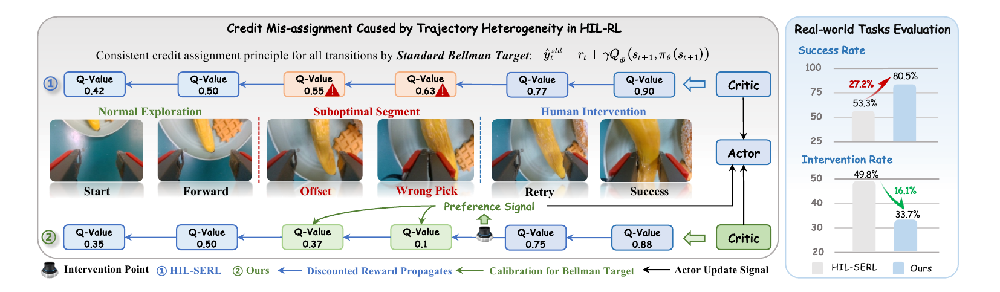
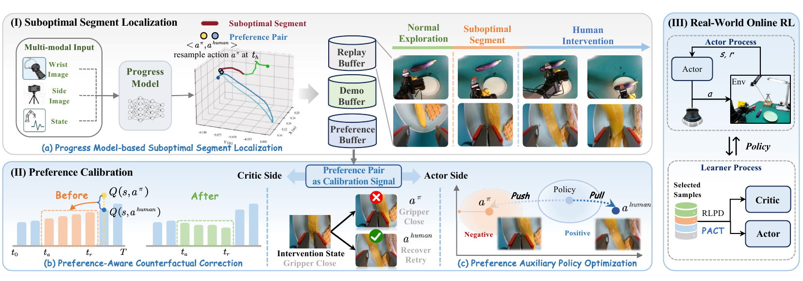
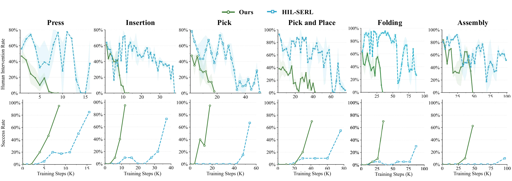
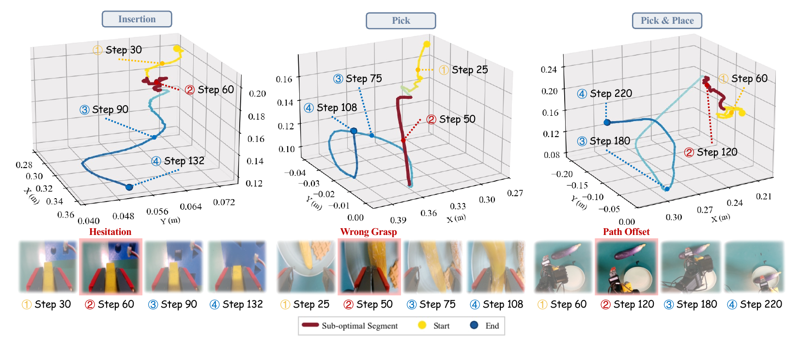
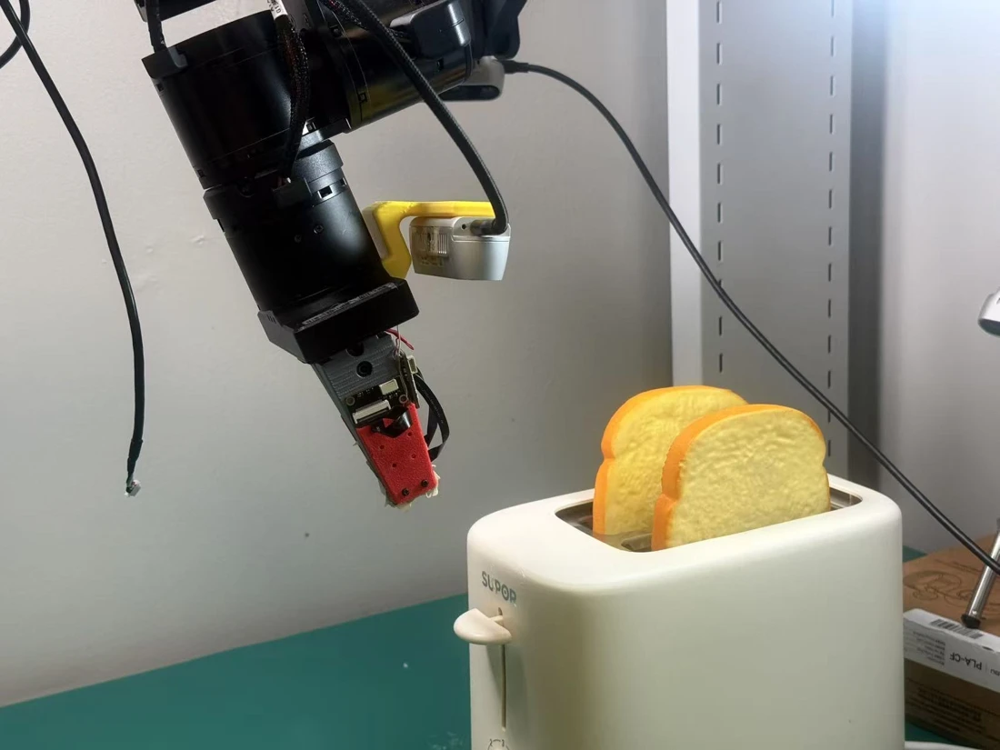
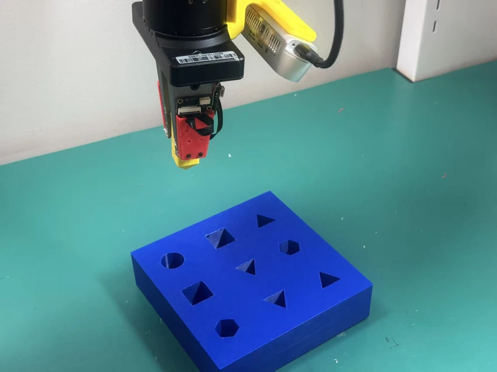
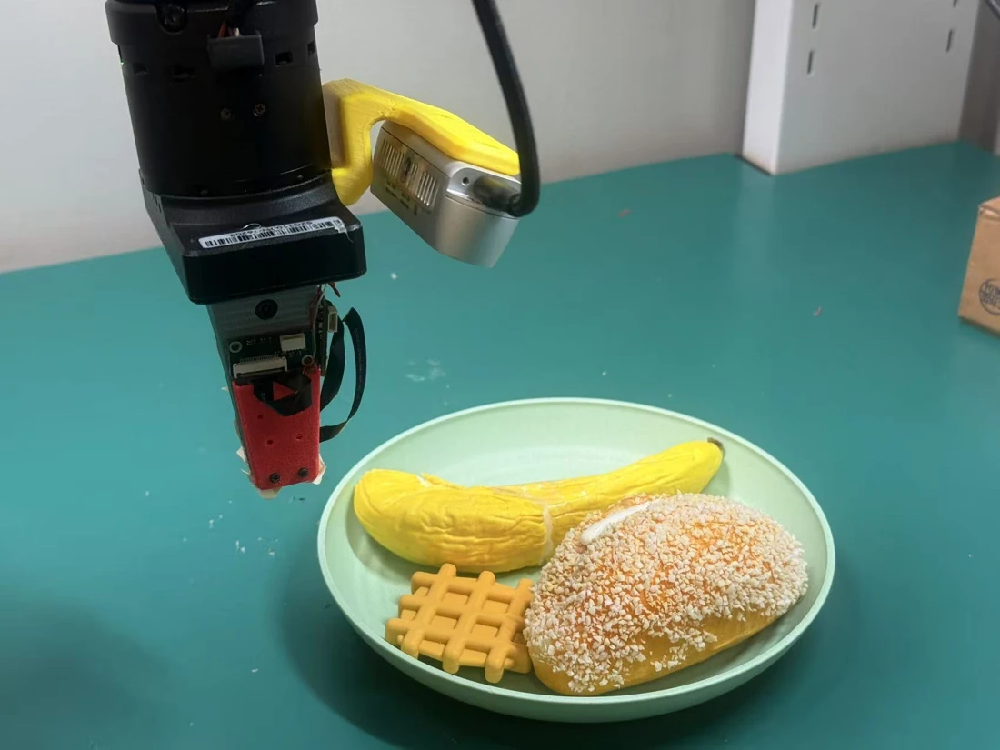
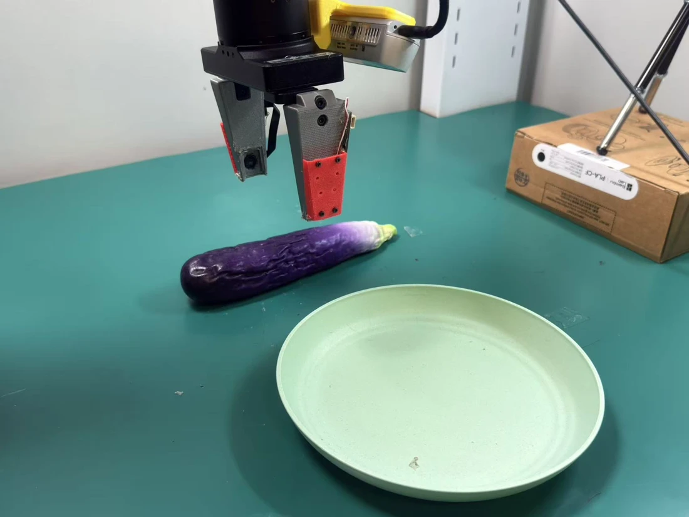
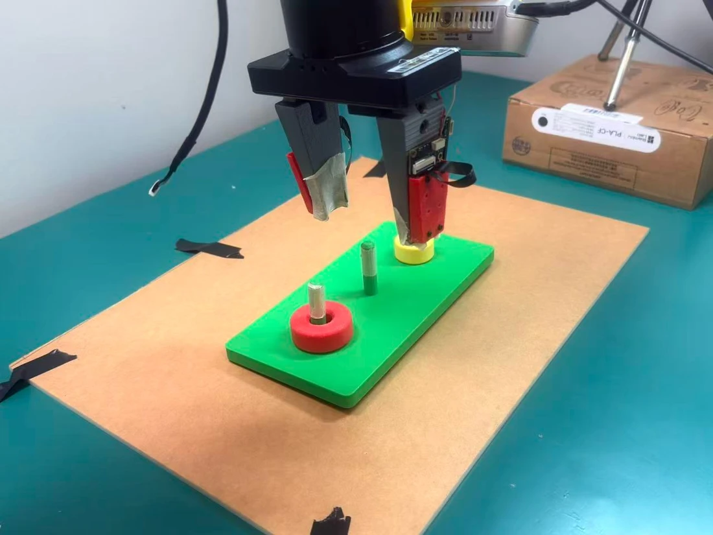

Find suboptimal segments
A lightweight progress model learns from demonstrations. Regressions in estimated task progress locate problematic segments before human intervention.
† Corresponding authors
80.5%
from 53.3% with HIL-SERL
33.7%
down from 49.8% with HIL-SERL
1.3×
67.5 vs. 86.9 minutes on average
Human-in-the-loop reinforcement learning (HIL-RL) improves sample efficiency in real-robot manipulation through online human intervention. However, successful trajectories may include suboptimal actions that deviate from the desired task-execution path and force human intervention. Existing HIL-RL methods typically apply the consistent credit assignment principle to all transitions, uniformly propagating discounted terminal rewards through suboptimal segments, ignoring the actual contribution of each transition to task success. This overestimates Q-values for critic learning and indirectly misguides actor updates toward suboptimal behavior patterns.
To this end, we propose PACT, a Preference-calibrated Actor-Critic Training framework that leverages the implicit preference signals induced by intervention to perform credit reassignment on identified suboptimal segments while directly guiding policy training for unbiased critic-actor learning. Specifically, we first design a progress model that learns from human demonstration and identifies suboptimal segments for credit correction. Then, from the human action and resampled policy action at the intervention state, we build preference pairs to define a counterfactual advantage that penalizes Bellman targets of the identified suboptimal segment, enabling directional credit calibration. Moreover, we directly align the policy with human corrective actions in the bounded mean space, providing an additional signal beyond critic-guided updates.
Across six real-robot manipulation tasks, PACT increases average success from 53.3% to 80.5%, reduces the human intervention rate from 49.8% to 33.7%, and achieves 1.3× faster training than HIL-SERL.
When a human rescues a rollout, the final reward can give undeserved credit to the robot actions that made the rescue necessary.

Locate the mistakes, reassign credit, and learn from the correction.

A lightweight progress model learns from demonstrations. Regressions in estimated task progress locate problematic segments before human intervention.
Human and resampled policy actions form preference pairs. A counterfactual advantage penalizes Bellman targets within the identified segments.
An auxiliary objective in bounded mean-action space draws the policy toward human corrections and away from suboptimal policy actions.
Evaluated on a Galaxea A1X 6-DoF arm with 20 demonstrations per task, against HIL-SERL and RLIF.
Scroll horizontally to view Folding, Assembly, and the averages →
| Metric | Method | Press | Insertion | Pick | Pick & Place | Folding | Assembly | Average |
|---|---|---|---|---|---|---|---|---|
| Success rate (%) ↑ | RLIF | 75 | 60 | 50 | 25 | 10 | 0 | 36.7 |
| HIL-SERL | 85 | 73 | 67 | 55 | 30 | 10 | 53.3 | |
| PACT (ours) | 95 | 90 | 95 | 70 | 70 | 63 | 80.5 | |
| Intervention rate (%) ↓ | RLIF | 37.4 | 36.7 | 38.9 | 63.8 | 52.4 | 59.6 | 48.1 |
| HIL-SERL | 43.6 | 45.3 | 35.8 | 54.9 | 63.1 | 56.0 | 49.8 | |
| PACT (ours) | 19.1 | 32.5 | 26.1 | 36.6 | 40.9 | 47.2 | 33.7 | |
| Training time (min) ↓ | RLIF | 37.7 | 51.4 | 74.8 | 108.4 | 106.2 | 122.1 | 83.4 |
| HIL-SERL | 23.2 | 51.8 | 75.0 | 110.8 | 118.2 | 142.6 | 86.9 | |
| PACT (ours) | 21.4 | 30.3 | 46.6 | 94.5 | 90.1 | 122.1 | 67.5 | |
| Actor steps (K) ↓ | RLIF | 13.1 | 18.6 | 23.9 | 35.8 | 33.5 | 40.4 | 27.6 |
| HIL-SERL | 7.7 | 17.6 | 22.1 | 38.0 | 38.3 | 44.1 | 28.0 | |
| PACT (ours) | 7.3 | 11.7 | 15.7 | 31.3 | 27.9 | 39.9 | 22.3 |
Table 1 · Compared with HIL-SERL, average success rises by 27.2 percentage points, intervention falls by 16.1 points, and training time falls from 86.9 to 67.5 minutes.

Progress-based localization identifies behavior such as hesitation, wrong grasps, and directional deviations before a human steps in.






@misc{liu2026pact,
title={Preference-Calibrated Human-in-the-Loop Reinforcement Learning for Robotic Manipulation},
author={Zeyi Liu and Guangyao Liu and Yinuo Qu and Yuquan Xue and Bofang Jia and Chunhua Yang and Weihua Gui and Keke Huang and Ziwei Wang},
year={2026},
eprint={2606.03949},
archivePrefix={arXiv},
primaryClass={cs.RO},
url={https://arxiv.org/abs/2606.03949}
}